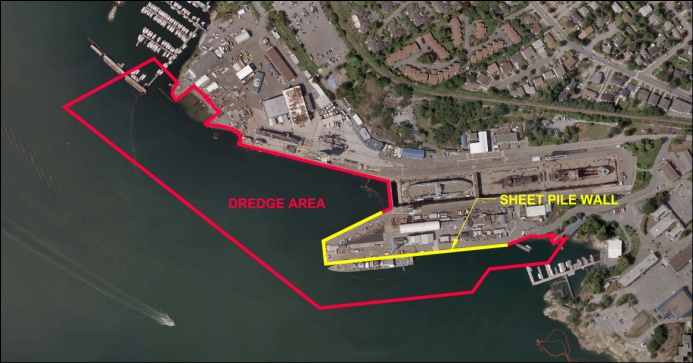
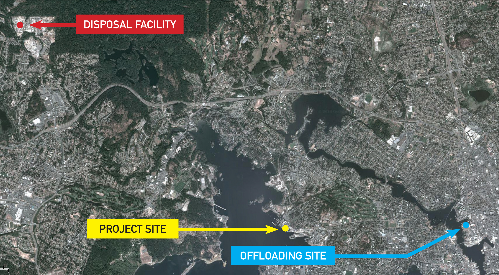

As part of the Federal Contaminated Sites Action Plan (FCSAP), Public Works and Government Services Canada (PWGSC) is remediating (cleaning-up) the contaminated sediments in the waterlot of the Esquimalt Graving Dock (EGD) to ensure the EGD meets federal and provincial environmental standards. The successful completion of this work will improve the marine habitat in Esquimalt Harbour.
The EGD is located on the north shore of Constance Cove in Esquimalt Harbour, at 825 Admirals Road in the Township of Esquimalt, BC. PWGSC is the federal custodian and operates and maintains the facility. The EGD has been used for the repair and maintenance of military and civilian vessels since 1927, and this long history of industrial use has contributed to sediment contamination in the seabed around the facility. The primary contaminants of concern identified from detailed site investigations include metals (e.g. arsenic, copper, lead, and zinc), polychlorinated biphenyls (PCBs), and polycyclic aromatic hydrocarbons (PAHs). Sodium and chloride ions (salt) from seawater, and other contaminants in lesser amounts, are also present. Based on the concentrations of the contaminants the classification for disposal purposes is waste quality IL+ soil (concentrations are greater than the BC Contaminated Sites Regulation Industrial Land Use standards); however approximately half of the material would be acceptable for use on industrial lands if the salt was not present. No Hazardous Waste level concentrations were identified. The sediments are acceptable for disposal at a facility permitted to accept waste quality soils.
For further information please see the PWGSC Esquimalt Graving Dock Detailed Site Investigation report (Golder Associates, June 7, 2013) in the Juan de Fuca Public Library.
The project involves three phases: constructing an erosion protection sheet pile wall around the south jetty, which was completed in April 2013; dredging the contaminated sediment from the waterlot and disposal off-site at a permitted landfill, which will begin in June 2013; and creating new intertidal marsh fish habitat in Esquimalt Harbour, which is planned to begin in July 2013.
The dredging phase of the project involves the removal of approximately 150,000 cubic metres of contaminated sediment from the EGD waterlot. This contract was awarded to Tervita Corporation in January 2013.
Dredged material will be transported from the EGD on barges to an off-load facility. Tervita plans to deliver the material to a private facility located in Victoria Harbour adjacent to David Street. The contaminated sediment will be loaded directly into trucks and taken to the Tervita Highwest Landfill located in the District of Highlands, BC.
An environmental monitoring program will help verify that the safeguards included in the project are protecting the environment during and after the clean up.
Dredging activities are planned to take place June 2013 - March 2014, six days a week (Monday through Saturday). Potential noise effects on the adjacent neighbourhood will be taken into consideration. The work hours will be similar to those of normal operations at the EGD, and noise levels will be monitored to follow the Township of Esquimalt’s noise bylaw.
Additional vessel traffic is expected, including barges, which will be coordinated with the Department of National Defence and the Queen's Harbour Master to minimize inconvenience to boaters in Esquimalt Harbour.
Increased truck traffic through the community may be encountered in Victoria, Langford and the Highlands; truck routing will be planned to minimize impacts on traffic flow.
For more information on this project, please contact the EGD Hotline at (250) 363-0227.